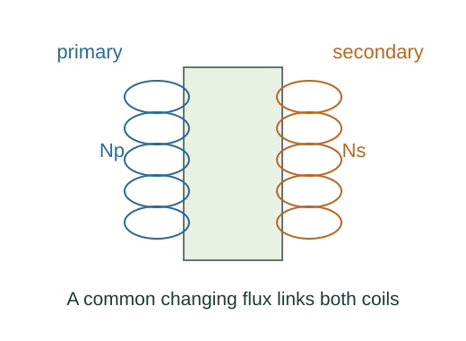

Derive RLC damping, AC power and transformer ratios
The loop equation gains a term Rq̇. Its characteristic roots follow exactly the damped-oscillator quadratic with m→L, b→R, k→1/C.
What the symbols mean
φ: voltage phase ahead of current; Np,Ns: turns; Vrms,Irms: RMS quantities; Q: initial charge amplitude.
When this applies
Sinusoidal steady AC or underdamped free RLC motion; ideal transformer with common flux, no losses and negligible magnetizing current.
Developing the argument

Include a resistor in free LC motion
The loop equation gains a term Rq̇. Its characteristic roots follow exactly the damped-oscillator quadratic with m→L, b→R, k→1/C.
Average instantaneous AC power
For v = Vmax cos ωt and i = Imax cos(ωt − φ), the product-to-sum identity leaves mean VmaxImax cos φ/2. RMS conversion divides each peak by √2.
Read phase from the impedance triangle
The quadrature voltage is I(XL − XC) and the in-phase voltage is IR. Their ratio is tan φ.
Use common changing flux
Faraday’s law gives winding voltage proportional to turn count if both windings link the same flux. Thus the voltage ratio is the turns ratio.
Conserve ideal transformer power
Equality of input and output power gives the inverse current ratio. Divide primary voltage by primary current and substitute the two ratios.
A worked example
A 2:1 primary-to-secondary turns ratio halves voltage, doubles ideal load current relative to primary load current, and reflects a load resistance multiplied by four.
Derivation behind this calculation ↗A point to keep straight
Peak and RMS ratios match for sinusoids, but average power requires RMS or the appropriate explicit factor one half.
Check the assumptions and derivation ↗